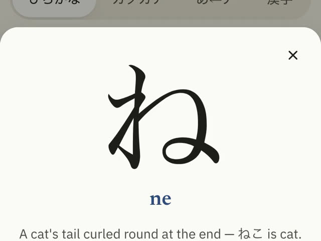

学ぶ
Study

See it- Today: one plan a day of new lessons, due reviews and a practice task.
- Kana a row a day, with picture stories and tracing. Look-alikes (シ ツ) drilled on purpose.
- Words in 9 stages, あいさつ to the て-form; verbs conjugated.
- Kanji through words you know; the furigana goes once learned.
- Grammar: every N5 pattern, in sentences you tap to hear.